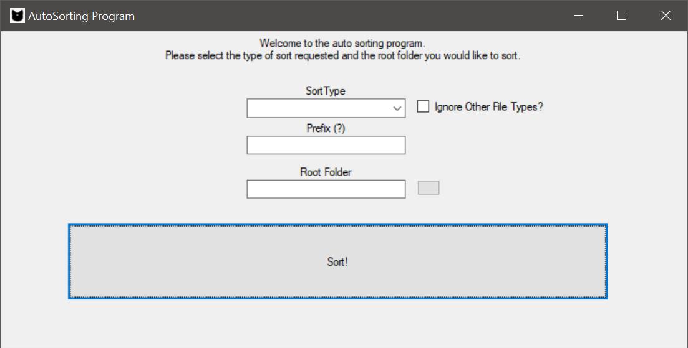
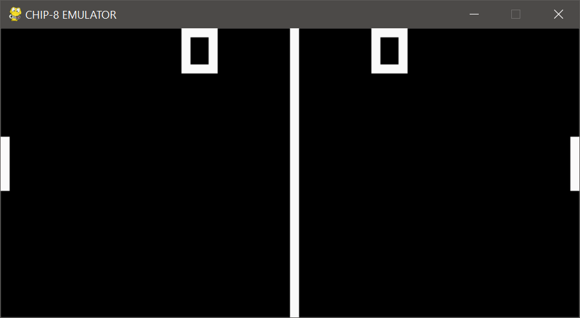
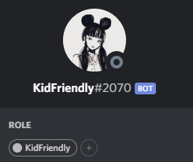

A C# Program that sorts any files in a given folder.
It natively sorts jpg, mp4, pdf but can support custom
file types. Sorts all files by numerical number with
the option of adding a prefix.
EXAMPLE: IMG_001.png, IMG_002.png, IMG_003.png
 A python program that reads data from a ROM and translates the binary information into instructions that would be interpreted. Includes 35 opcodes, A pointer register, stack system and pong!
 Discord bot built on NodeJS. Notable features such as image generation, dictionary definitions, youtube search, music playing and administration commands. The bot uses libraries such as puppeteer for web scraping and opusencoder for voice chat commands. Since the bot is mostly for personal use, most commands are geared specfically to myself and friends.
for more side projects, visit my github